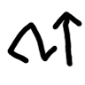
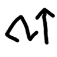

New radicals & word categories
Sense lines


For consistency, all words meaning the five senses have two curved lines to the right, representing detecting stimuli with the body part depicted. Some other words also contain sense lines.
- anan “to smell (a scent)”: nose + sense lines
- kun “to perceive (a trait)”: sense lines alone
- pa “to touch (a surface)”: right-pointing finger + sense lines
- sapole “to taste (a flavor)”: mouth + sense lines
- sema “to hear (a sound, audio)”: ear + sense lines
- tijante “to focus [on], to pay attention [to] (a focus)”: head + sense lines
- teka “to see (a view)”: eye + sense lines
Taster mouth

For consistency, SP suwi has been changed. All six taste words are expressed with a combination of a specific thing representing that flavor + a mouth above, modeled after makan ≡ SP moku.
- kikolo “bitter”: bitter melon + mouth (This may change in the future for being too Japanese-centric)
- muncu “sour”: lemon + mouth
- nankin “salty”: water + fish (symbolizing seawater) + mouth
- pikante “spicy”: chili pepper ≡ SP namako variant + mouth
- satu “sweet”: apple ≡ kuwosi and SP kili + mouth
- umami “umami flavor, savory”: meat on the bone ≡ niku + mouth
(Is it just me who finds the coincidence nice that the Japanese-based word umami is derived from another Japanese-based word niku?)
Color triangle


For consistency, color words have not been inherited from Sitelen Pona loje, jelo, laso, walo, and pimeja. However, their common triangle shape has been kept and reinterpreted.
The triangle is now a hue picker: the bottom left vertex represents red, the top vertex represents yellow, and the bottom right vertex represents blue. The circle can be right outside one vertex, between the vertices tangent to the midpoint of an edge, or in the center if a color is achromatic.
- hunsi “red”: ↙ red
- nalinca “orange”: between red and yellow
- sepo “yellow”: ↑ yellow
- lunti “green”: between yellow and blue
- nile “blue”: ↘ blue
- sunaja “purple”: between blue and red
- tusa “grey”: no hue; circle in the center
If the hue is not enouh to specify a color, a brightness slider is added to the bottom.
The underlying logic is similar to ColorADD, which also combines 6 hues from red, yellow, and blue, and modifies them for brightness. As an exception, “brown” is not derived from red + yellow + blue in Ikama Tasuwi. Ikama Tasuwi’s “brown” would be ColorADD’s “dark orange”.

Animals


Sitelen Pona’s minimalist animal drawings have been kept. They have also been joined by Kokanu’s more specific animal words.
Inherited from SP:
- nin ≡ jan (meaning kept as “person”)
- canwa ≡ mu (meaning changed to “[any] animal”)
- hoton ≡ soweli (meaning refined to “[specifically] mammal”)
- pulusi ≡ akesi (meaning restricted to “reptile”)
- musi ≡ pipi (meaning kept)
- kuku ≡ waso (meaning kept)
- micin ≡ kala (meaning kept)
- momu ≡ mani (meaning changed to “cow, bovine”)
- *
 kijetesantakalu has been removed for being way too specific.
kijetesantakalu has been removed for being way too specific.
Additional animal words:
- anpipi “amphibian”: Frog head inspired by Animal Crossing.
- cuwi “mouse, rodent”: Different simplification from misa.
- jone “sheep, goat, caprine”: soweli with curly ram’s horn.
- meja “cat, feline”: Cat head inspired by Pusheen.
- neje “horse, equine”: Horse head inspired by chess bishop.
- pawo “dog, canine”: Dog head inspired by a head-on view of Snoopy.
- suwina “pig, swine”: Pig snout with two dot eyes above.
Emotions


[wip]
Numbers


The number words from 0 to 9 are just the numerals 0 to 9:
The first three powers of 10 are Roman numerals:
Other number words are as follows.
Time


Toki Pona lacks words for time except, well, “time”: tenpo. This has been directly loaned:
Past, present, future
The past, present, and future are represented as three circles in a line representing them. These words are used as tense markers too.
Young, new, old
Toki Pona’s sin has split into talun for animate objects and neso for inanimate objects. Meanwhile, majuna has not split, becoming cune alone. This has caused this slight asymmetry:
- neso ≡ sin (meaning restricted to inanimate)
- talun (variant of sin, meaning restricted to animate)
- cune ≡ majuna
Other
Other words related to time are derived from the clock glyph of ten or based on internationally recognized media symbols.
Directions


[wip]
Movement
 



[wip]
Shapes


Sitelen Pona’s leko, lili, linja, lupa, palisa, sike, and suli have been joined by Kokanu’s variety of shape words.
Inherited from SP:
- pansin ≡ leko (meaning restricted to 2D square)
- cina ≡ lili
- laki ≡ linja
- kumon ≡ lupa
- cohi ≡ palisa
- watan ≡ sike (meaning restricted to 2D circle)
- cenpo ≡ suli
Additional animal words:
- ankolo “angle”
- asa “sharp” (also a minor Toki Pona word kiki)
- cenci “narrow”
- kiju “ball, sphere”
- kuto “short”
- lamo “long”
- leseka “grid”
- mona “extremity”
- mutakin “straight”
- niju “material”
- pintu “point”
- poloko “block”
- satilu “loose”
- sincuwan “shape”
- soto “type, sort”
- takilo “cone”
- tati “tight”
- tenja “wide”
- tolu “cylinder, tube”
- wanku “curved”